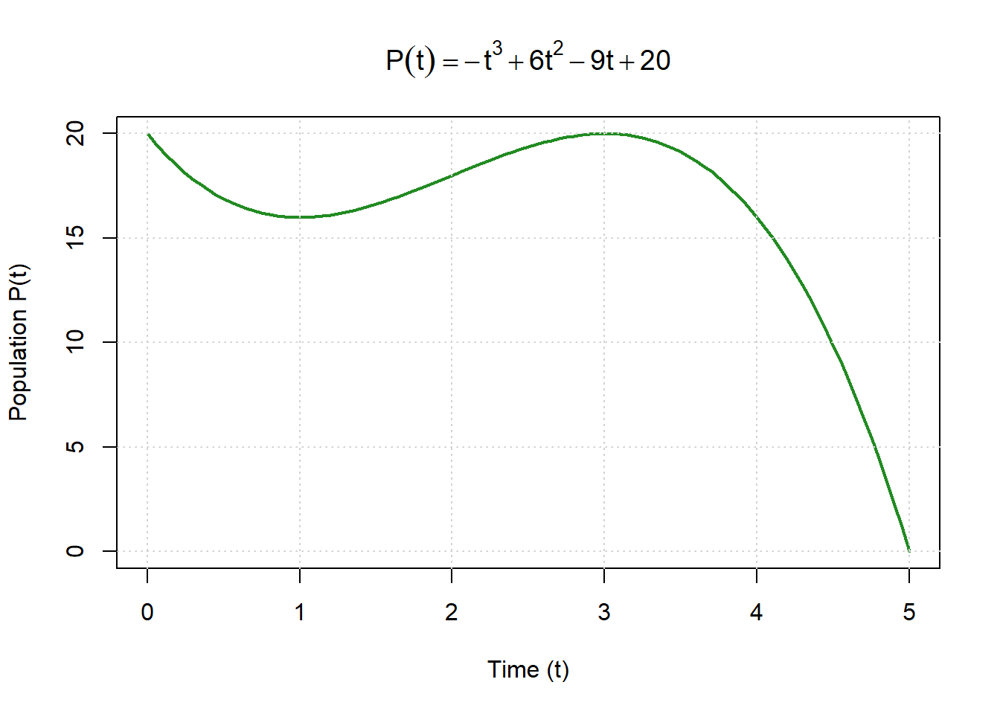
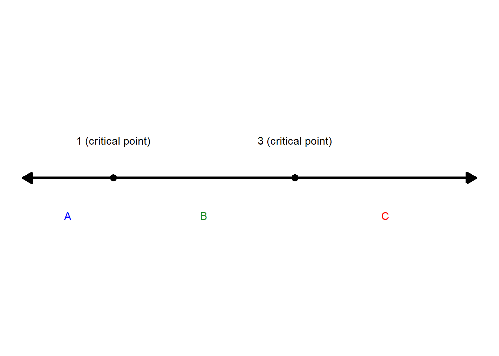

Chapter 5 Applications of Derivatives: Understanding Change and Extremes in Environmental Systems
5.1 Using Derivatives to Find Extremes
In environmental science, many of the most important questions revolve around finding extremes — the highest or lowest points of a system’s behavior. These points often represent tipping points, thresholds, or limits that define how natural systems respond to change.
For example:
- What is the maximum population an ecosystem can support before resources become limiting?
- When is the lowest point of atmospheric CO₂ during a seasonal cycle?
- At what point in time does a lake’s temperature reach its annual peak?
- How much rainfall leads to the maximum runoff in a watershed?
- When does a species’ growth rate slow down as competition increases?
Each of these questions asks about extrema — the points where something stops increasing and starts decreasing (a maximum) or stops decreasing and starts increasing (a minimum).
5.1.1 Why Extremes Matter
In environmental systems, extrema are rarely just mathematical curiosities. They often mark ecological thresholds or critical transitions where a system shifts from one state to another.
- A maximum might signal the carrying capacity of a population or the peak of a pollution event.
- A minimum could correspond to the lowest nutrient level needed to sustain life or the point of greatest drought intensity.
Understanding these points helps scientists predict, manage, and mitigate changes in ecosystems.
![A cartoon split into two contrasting halves under the title “Why Extremes Matter.” The left side shows a lush green landscape with a large leafy tree, a flowing river, and three white rabbits sitting on grass. A wooden sign labeled “Maximum” stands near the tree. The right side depicts a barren, cracked landscape with a dead tree, a wilted plant, and dark storm clouds overhead. A wooden sign labeled “Minimum” stands near the dead tree. The center of the image forms a curved transition between the two environments, illustrating ecological extremes. Text below explains that maxima can indicate carrying capacity or peak pollution, while minima can represent nutrient scarcity or drought intensity, emphasizing the importance of understanding these points in ecosystems](images/extrema.png)
5.1.2 The Mathematical Lens
From a mathematical perspective, these questions are all about the shape of a function — how it rises and falls. When a function reaches a peak or valley, its graph changes direction. At that turning point, the slope of the tangent line becomes zero.
That’s where derivatives come in.
A derivative measures how fast something is changing — the slope of the function at any given point.
- When the derivative is positive, the function is increasing.
- When it is negative, the function is decreasing.
- When it equals zero, the function is neither rising nor falling — it’s level — and that’s where we look for potential extrema.
5.1.3 The Big Idea
Derivatives act as a mathematical microscope: they let us zoom in on how a function behaves locally — whether it’s climbing, falling, or flattening out.
By finding where the derivative equals zero (or is undefined), we identify critical points — the likely spots for maxima or minima.
From there, we use the sign of the derivative (and sometimes the second derivative) to determine whether each point is a peak, valley, or inflection in the system.
5.1.4 Environmental Interpretation
In practice, this process might mean:
- Identifying the time when a glacier’s melt rate switches from accelerating to slowing.
- Finding the nutrient concentration that maximizes algal growth before it declines due to self-shading.
- Determining the temperature where enzyme activity in a soil process is optimal.
In all these cases, calculus provides the same insight: the moment where change stops changing direction — a snapshot of balance in a dynamic world.
5.2 Understanding Maximums and Minimums
Before we dive deeper into finding extrema, let’s clarify what we actually mean by maximums and minimums — and the difference between local and global extremes.
5.2.1 What Is a Maximum?
A maximum is a point where the function reaches its highest value — either within a small region or across its entire domain.
Local (Relative) Maximum:
A point where the function is higher than nearby points.
Think of it as a small hilltop on a larger landscape.
Mathematically, \(f(a)\) is a local maximum if: \[ f(a) \ge f(x) \quad \text{for all } x \text{ near } a \]Global (Absolute) Maximum:
The single highest point on the entire graph.
Mathematically, \(f(a)\) is a global maximum if: \[ f(a) \ge f(x) \quad \text{for every } x \text{ in the domain} \]
Example:
In a year-long temperature record, the hottest day of the year is the global maximum,
while the warmest day in each month would be local maxima.
5.2.2 What Is a Minimum?
A minimum is a point where the function reaches its lowest value.
Local (Relative) Minimum:
A point where the function is lower than nearby points — a small valley in the landscape.
\[ f(a) \le f(x) \quad \text{for all } x \text{ near } a \]Global (Absolute) Minimum:
The lowest point across the entire function.
\[ f(a) \le f(x) \quad \text{for every } x \text{ in the domain} \]
Example:
For a river’s flow rate, the lowest discharge of the year is a global minimum,
while each dip between storms is a local minimum.
5.2.3 Global Extrema and Finite Domains
When a function is defined only over a finite interval — for example, \(a \le x \le b\) —
the global maximum or minimum can occur at the endpoints as well as at interior critical points.
That means you must always check the function’s boundaries when finding global extrema.
Sometimes, the highest or lowest value of a system happens right at the edge of the range you’re studying.
Example:
If we model daily solar radiation between sunrise and sunset,
the minimum radiation occurs at sunrise and sunset — the endpoints of the domain.
Concept Check: Local vs. Global Extrema
1. A temperature function over a 24-hour day has a peak at noon and a smaller peak at midnight. Which is the global maximum and which is the local maximum?
Click to reveal answer
The noon peak is the global maximum (highest temperature of the entire day). The midnight peak is a local maximum — it’s higher than nearby values but not the highest overall. Both are local maxima, but only the noon peak is also the global maximum.
2. Can a function have a local minimum that is higher than a local maximum at a different point? Sketch an example if yes.
Click to reveal answer
Yes. Consider a function that oscillates with an overall upward trend — like seasonal CO₂ with a rising baseline. A local minimum in 2024 could be higher than a local maximum from 2020. The key is that “local” only compares a point to its immediate neighbors, not to the entire domain.
3. True or false: A function on a closed interval \([a, b]\) must have both a global maximum and a global minimum.
Click to reveal answer
True. This is the Extreme Value Theorem: a continuous function on a closed, bounded interval is guaranteed to reach both a global max and a global min somewhere on that interval. This is why checking endpoints matters — the global extremum might be at the boundary, not at a critical point.
5.2.4 Visualizing Local vs. Global Extrema
Imagine hiking through a mountain range:
- Each hilltop you reach is a local maximum.
- The tallest mountain of all is the global maximum.
- Each valley floor between peaks is a local minimum.
- The deepest valley overall is the global minimum.
- If your hike starts and ends in a valley, those endpoints might also mark global extrema — even if no peak lies between.
![Four-panel figure showing different behaviors of extrema and critical points. Panel A shows a cubic function with one local maximum and one local minimum marked on the curve. Panel B shows a downward-opening parabola on the finite interval from 0 to 6, with a global maximum at the vertex and endpoint minima at both ends of the interval. Panel C shows the function x cubed with a flat point at x equals 0 where the derivative is zero but there is no maximum or minimum. Panel D shows a sine curve over one full cycle from 0 to 2 pi, with a local maximum at pi over 2 and a local minimum at 3 pi over 2. The figure illustrates that derivative zero can indicate different behaviors depending on the shape of the function and the domain.](environmental-precalculus_files/figure-html/four-extrema-types-1.png)
Figure 5.1: Examples of different types of extrema and critical points.
5.2.5 What each panel illustrates:
| Panel | Function | Concept Highlighted |
|---|---|---|
| A | \(f(x) = x^3 - 3x^2 + 2\) | Typical local max and min inside the domain |
| B | \(f(x) = -(x - 3)^2 + 5\) over \([0,6]\) | Global extrema at endpoints |
| C | \(f(x) = x^3\) | Flat point with \(f'(x)=0\) but no extremum |
| D | \(f(x) = \sin(x)\) | Repeating local maxima/minima in periodic behavior |
5.2.6 Why the Difference Matters
When analyzing environmental data — like temperature, population, or rainfall —
it’s often the local extrema that show short-term cycles or seasonal variation,
while global extrema reveal long-term limits or absolute thresholds.
For instance:
- The local maximum in CO₂ each year reflects seasonal plant activity.
- The global maximum shows the all-time record high in atmospheric concentration.
In summary:
- Local extrema describe regional or temporary highs and lows.
- Global extrema describe the overall highest or lowest points in a dataset or model.
- On a finite domain, global extrema can occur at the endpoints as well as where \(f'(x) = 0\).
Both are found using the same calculus tools — derivatives — but interpreted in different ways depending on the system’s context.
5.3 The Idea
Every smooth curve tells a story about change. When a function reaches a peak (a high point) or a valley (a low point), its direction of change reverses — from increasing to decreasing, or vice versa. These turning points mark moments where something important happens: the system pauses before shifting course.
Mathematically, this change in direction shows up in the slope of the function.
The derivative, \(f'(x)\), measures that slope — how fast the function is increasing or decreasing at any given point.
- When \(f'(x) > 0\), the slope is positive → the function is rising.
- When \(f'(x) < 0\), the slope is negative → the function is falling.
- When \(f'(x) = 0\), the slope is flat → the function is level.
At a peak or valley, the tangent line to the curve flattens out — it’s neither rising nor falling.
That’s why these special points occur when:
\[ f'(x) = 0 \]
These are called critical points, and they are the candidates for extreme values — places where a maximum or minimum might occur.
5.3.1 Visualizing the Idea
Imagine hiking through a mountain landscape:
- When you’re climbing, the slope beneath your feet is positive — you’re going up.
- When you’re descending, the slope is negative — you’re going down.
- At the summit, for just a moment, the ground feels level — your slope is zero.
That’s the mathematical equivalent of \(f'(x) = 0\).
Similarly, in environmental systems:
- The point when a river’s discharge stops rising after a storm marks a maximum.
- The moment when CO₂ concentration stops falling in spring marks a minimum.
These transitions — from increasing to decreasing or vice versa — are what we call extrema.
5.3.2 Why “Critical Points” Aren’t Always Extremes
Finding where \(f'(x) = 0\) is an important step, but it doesn’t automatically mean the function has a maximum or minimum there.
A zero slope simply means the tangent line is flat — the function could be turning around or continuing in the same direction.
5.3.2.1 When Flat Doesn’t Mean Peak or Valley
Sometimes the derivative equals zero, but the function just keeps going up or down.
Consider the function:
\[ f(x) = x^3 \]
Its derivative is:
\[ f'(x) = 3x^2 \]
Here, \(f'(0) = 0\), so \(x = 0\) is a critical point.
But if you graph \(f(x) = x^3\), you’ll see that the curve flattens briefly at the origin, then continues increasing.
There’s no maximum or minimum — the function simply changes concavity (the direction it bends).
![Two side-by-side graphs comparing a function and its derivative. The left panel shows f(x) equals x cubed, an S-shaped curve that decreases for negative x, increases for positive x, and has a flat point at x equals 0. The right panel shows its derivative f prime of x equals 3x squared, a U-shaped parabola that is always nonnegative and touches zero only at x equals 0. The figure illustrates that the derivative is zero where the original function has a horizontal tangent and that the function is increasing everywhere except at that flat point.](environmental-precalculus_files/figure-html/x3-derivative-side-by-side-1.png)
Figure 5.2: A function and its derivative shown side by side.
5.3.2.2 What This Means
Setting \(f'(x) = 0\) identifies potential extrema, not guaranteed ones.
To determine what kind of point it is, we need more information about the function’s behavior near that location.
We can use:
- A first derivative sign chart to see if the slope changes from positive → negative (maximum) or negative → positive (minimum).
- Or the second derivative test, which checks whether the curve bends upward or downward at that point.
5.3.2.3 Key Takeaways
- A critical point is where \(f'(x) = 0\) or \(f'(x)\) is undefined.
- A true extremum occurs only if the function changes direction there.
- Use derivative sign changes or concavity to tell the difference.
In short:
Solving \(f'(x) = 0\) gives us the candidates for maxima and minima —
further analysis confirms which ones truly are.
Concept Check: Critical Points
1. If \(f'(c) = 0\), does that guarantee \(c\) is a maximum or minimum?
Click to reveal answer
No. \(f'(c) = 0\) means \(c\) is a critical point, but it could also be an inflection point — a place where the function levels off momentarily without changing direction. For example, \(f(x) = x^3\) has \(f'(0) = 0\), but \(x = 0\) is neither a max nor a min.
You need additional information (a sign chart or second derivative test) to classify the critical point.
2. A population model has \(P'(t) = 0\) at \(t = 5\) years. List three possible ecological interpretations of what might be happening at \(t = 5\).
Click to reveal answer
The population growth rate is momentarily zero at \(t = 5\). This could mean:
- The population has reached its carrying capacity (a maximum) and is about to decline.
- The population hit a low point (a minimum) after a decline and is about to recover.
- The population is at a temporary plateau — growth paused but will resume in the same direction (an inflection point, not an extremum).
The sign chart of \(P'(t)\) around \(t = 5\) determines which interpretation applies.
5.3.3 Environmental Example
In population ecology, imagine a species whose population \(P(t)\) grows rapidly at first but slows down as resources become limited.
If we graph \(P(t)\) over time, the population might climb to a maximum before leveling off or declining.
At that turning point, the rate of growth — the derivative \(P'(t)\) — equals zero.
Finding that zero slope helps us identify the moment of ecological balance, where birth rates equal death rates and the system momentarily stabilizes.
In short, extrema mark the balance points of change, and the derivative is our tool for detecting them.
By finding where the slope becomes zero, we uncover where a system pauses, pivots, or peaks —
the fingerprints of dynamic processes across environmental systems.
5.4 Step-by-Step: Finding Extrema
When we want to find where a function reaches its highest or lowest point, we follow a logical, repeatable process.
You can think of this as a “recipe” for finding turning points — it always works, no matter how complicated the function.
5.4.1 The Four-Step Process
Take the derivative of the function.
→ This gives you a formula for the slope (how fast the function is changing).Find critical points by solving \(f'(x) = 0\) (or where \(f'(x)\) is undefined).
→ These are possible peaks or valleys.Use a sign chart or second derivative to classify each critical point.
→ This tells you whether each point is a maximum, minimum, or neither.Evaluate the function at those points.
→ This gives the actual values of the extremes (the “how high” or “how low”).
5.5 Step 1: Take the Derivative
To begin, take the derivative of your function \(f(x)\).
This tells you the rate of change — how fast \(f(x)\) is rising or falling at each point.
If you imagine the graph of your function as a landscape:
- The slope of the function tells you whether you’re climbing uphill (positive slope) or going downhill (negative slope).
- At a peak or valley, the slope flattens out — the hill levels before changing direction.
That’s why extrema occur when the derivative equals zero.
5.5.1 How to Differentiate
Apply the derivative rules you already know:
| Rule Type | Example | Derivative |
|---|---|---|
| Power Rule | \(x^n\) | \(n x^{n-1}\) |
| Sum Rule | \(f(x) + g(x)\) | \(f'(x) + g'(x)\) |
| Product Rule | \(f(x)g(x)\) | \(f'(x)g(x) + f(x)g'(x)\) |
| Quotient Rule | \(\frac{f(x)}{g(x)}\) | \(\frac{f'(x)g(x) - f(x)g'(x)}{g(x)^2}\) |
| Chain Rule | \(f(g(x))\) | \(f'(g(x)) \cdot g'(x)\) |
Tip: Always rewrite the function cleanly before differentiating — simplify fractions, expand products, and identify which rule(s) you’ll need.
5.5.2 What You’re Looking For
You’re not differentiating just to practice — you’re looking for turning points, where the slope might change sign.
These are the potential peaks or valleys of the system, the places where growth stops and reversal begins.
Once you have \(f'(x)\), the next task is to find where it equals zero.
5.6 Step 2: Find the Critical Points
A critical point is any point on the function where:
- \(f'(x) = 0\), or
- \(f'(x)\) does not exist (but \(f(x)\) does).
These are the places where the function might reach a maximum or minimum.
5.6.1 Why Set the Derivative to Zero?
At a peak or valley, the tangent line to the curve is flat — no uphill or downhill slope — meaning: \[ f'(x) = 0 \]
That’s the condition we solve to find potential extrema.
5.6.2 How to Solve \(f'(x) = 0\)
Depending on your derivative, different algebraic tools work best:
- Factoring: The fastest approach if possible.
Example: \(f'(x) = 3x(x - 2) = 0 \Rightarrow x = 0, 2\) - Quadratic Formula:
Use if \(f'(x)\) is quadratic and doesn’t factor nicely:
\[ x = \frac{-b \pm \sqrt{b^2 - 4ac}}{2a} \] - Graph or numerical methods:
If the equation is more complicated (exponential, trigonometric, higher-order), use a graphing tool like Desmos, R, or a calculator to approximate roots.
Note: Sometimes \(f'(x)\) might be undefined (like with absolute value functions).
Those points can also be critical points if \(f(x)\) itself is still defined there.
5.7 Step 3: Classify Each Critical Point Using a Sign Chart
Once you’ve found the critical points, the next question is:
“Is this point a peak, a valley, or just a flat spot?”
To answer that, we use a sign chart — a simple, visual way to test how the slope behaves around each critical point.
5.7.1 How to Build a First Derivative Sign Chart
- Factor the derivative (if possible).
This makes it easy to check the signs of each factor. - Mark the critical points on a number line.
They divide the number line into intervals. - Choose a test value in each interval.
Substitute it into \(f'(x)\) to check the sign (positive or negative). - Record the results.
- If \(f'(x)\) changes from + → –, it’s a local maximum.
- If \(f'(x)\) changes from – → +, it’s a local minimum.
- If there’s no sign change, it’s not an extreme point (could be an inflection).
- If \(f'(x)\) changes from + → –, it’s a local maximum.
5.8 Step 4: Evaluate the Function at the Critical Points
Now that you know which points are maxima or minima, you can find their actual heights or depths by plugging those \(x\)-values back into the original function \(f(x)\).
For each critical point \(x_i\): \[ y_i = f(x_i) \]
These \((x_i, y_i)\) pairs are your extrema coordinates.
5.8.1 How to Interpret the Results
| Type | Behavior | Example Interpretation |
|---|---|---|
| Local Maximum | Function rises then falls | Peak temperature or maximum biomass |
| Local Minimum | Function falls then rises | Lowest CO₂ concentration or drought minimum |
| Neither | Function flattens but continues | Inflection in trend or temporary slowdown |
Tip: Always check whether your extrema are local (within a neighborhood) or global (the absolute highest or lowest value on the domain).
5.8.2 Putting It All Together
By following these steps, you can analyze any smooth function systematically:
| Step | What You Do | What It Tells You |
|---|---|---|
| 1. Differentiate | Find \(f'(x)\) | The rate of change |
| 2. Set \(f'(x) = 0\) | Solve for \(x\) | Potential turning points |
| 3. Sign chart or \(f''(x)\) test | Check slope behavior | Identify max/min |
| 4. Evaluate \(f(x)\) | Get actual values | How high or low the extremes are |
5.8.3 Environmental Perspective
In environmental modeling, this process might look like:
- Finding when a river flow rate peaks after rainfall (maximum).
- Determining the lowest temperature in a yearly cycle (minimum).
- Locating when a population growth curve levels off at carrying capacity (slope = 0).
In all cases, derivatives let us move from observation (“the graph changes”) to quantification (“it changes where \(f'(x) = 0\) and how much it changes around that point”).
5.9 🌱 Environmental Example: A Cubic Population Model
Let’s explore how derivatives help us find maximum and minimum points using a realistic environmental example — a population that grows, stabilizes, and then declines due to changing conditions.
5.9.1 Step 0: The Model
We’ll use this cubic population function:
\[ P(t) = -t^3 + 6t^2 - 9t + 20 \]
Here:
- \(P(t)\) represents population size at time \(t\)
- The negative cubic term (\(-t^3\)) eventually causes decline — simulating limits like competition, disease, or limited resources
- The middle terms model an initial growth phase before the downturn

Figure 5.3: Population modeled as a function of time.
5.9.2 Step 1: Find the First Derivative
To determine when the population reaches a high point (maximum) or low point (minimum), we start by finding how the population is changing over time — its rate of change.
This rate of change is given by the first derivative of the function \(P(t)\).
Our model is:
\[ P(t) = -t^3 + 6t^2 - 9t + 20 \]
Apply the power rule to each term:
| Term | Derivative |
|---|---|
| \(-t^3\) | \(-3t^2\) |
| \(6t^2\) | \(12t\) |
| \(-9t\) | \(-9\) |
| \(20\) | \(0\) (constants don’t change) |
Combine these results:
\[ P'(t) = -3t^2 + 12t - 9 \]
5.9.3 What the Derivative Tells Us
- \(P'(t) > 0\): the population is increasing (growth phase)
- \(P'(t) < 0\): the population is decreasing (decline phase)
- \(P'(t) = 0\): the growth rate is zero — the population is neither rising nor falling
These “flat slope” points are where the population might reach a maximum or minimum — the key turning points in its behavior.
Next Step:
Set \(P'(t) = 0\) to find when the growth rate becomes zero.
These values of \(t\) are called critical points, and they’re the candidates for the population’s peaks and valleys.
5.9.4 Step 2: Find the Critical Points
Now that we have the derivative, we can find where the population stops increasing or decreasing — these are called critical points.
Critical points occur where:
- The slope is zero (a flat or horizontal tangent line), or
- The derivative is undefined (sharp corners or cusps — we’ll explore those later)
For this model, we set the derivative equal to zero:
\[ P'(t) = -3t^2 + 12t - 9 = 0 \]
This is a quadratic equation, so we can solve it by factoring or using the quadratic formula.
5.9.4.1 Step 2a: Solve by Factoring
First, simplify by dividing both sides by \(-3\):
\[ t^2 - 4t + 3 = 0 \]
Now factor:
\[ (t - 1)(t - 3) = 0 \]
So:
\[ t = 1 \quad \text{and} \quad t = 3 \]
These are our critical points — times when the slope is zero and the population might reach a maximum or minimum.
5.9.4.2 Step 2b: Solving with the Quadratic Formula (if needed)
If factoring doesn’t work, we can use the quadratic formula:
\[ t = \frac{-b \pm \sqrt{b^2 - 4ac}}{2a} \]
For \(P'(t) = -3t^2 + 12t - 9\):
\[ a = -3, \quad b = 12, \quad c = -9 \]
Substitute into the formula:
\[ t = \frac{-12 \pm \sqrt{(12)^2 - 4(-3)(-9)}}{2(-3)} = \frac{-12 \pm \sqrt{144 - 108}}{-6} \]
\[ t = \frac{-12 \pm 6}{-6} \]
\[ t = 1 \quad \text{and} \quad t = 3 \]
5.9.5 Interpretation
The slope of \(P(t)\) becomes zero at \(t = 1\) and \(t = 3\)
These are the critical times when the population stops changing direction.
In the next step, we’ll determine which point is a maximum (peak population)
and which is a minimum (lowest population) by examining the sign of the derivative around them.
Key Idea:
Critical points are where “change pauses.”
The derivative equals zero, marking potential peaks or valleys in the system’s behavior.
5.9.6 Step 3: Construct a Sign Chart
Now that we’ve found the critical points at \(t = 1\) and \(t = 3\), we can determine whether each one represents a maximum or a minimum.
To do this, we analyze how the sign of the derivative changes around those points.
5.9.7 Why Use a Sign Chart?
The first derivative tells us if the function is:
- Positive → the function is increasing (uphill)
- Negative → the function is decreasing (downhill)
At a maximum, the slope changes from positive to negative.
At a minimum, the slope changes from negative to positive.
A sign chart helps us visualize these changes.
5.9.8 The Derivative (Factored Form)
We’ll use the factored version of the derivative:
\[ P'(t) = -3(t - 1)(t - 3) \]
Because it’s already factored, we can easily test the sign of each factor in different regions.
5.9.9 Step 3a: Divide the Number Line
Mark the critical points on a number line. These divide the domain into three intervals:
- Interval A: \((-\infty, 1)\)
- Interval B: \((1, 3)\)
- Interval C: \((3, \infty)\)

Figure 5.4: Number line showing critical points and intervals.
5.9.10 Step 3b: Choose Test Points
Next, pick one test value in each interval to check whether the derivative is positive or negative in that region.
Remember, we only need one test point per interval — if the derivative’s sign is positive or negative at one point in an interval, it will have the same sign everywhere in that interval.
| Interval | Test Point | \(t - 1\) | \(t - 3\) | × \(-3\) | Sign of \(P'(t)\) | Behavior of \(P(t)\) |
|---|---|---|---|---|---|---|
| \(t < 1\) | 0 | \(-\) | \(-\) | \(-\) | Negative | Decreasing |
| \(1 < t < 3\) | 2 | \(+\) | \(-\) | \(+\) | Positive | Increasing |
| \(t > 3\) | 4 | \(+\) | \(+\) | \(-\) | Negative | Decreasing |
5.9.11 Step 3c: Interpret the Signs
Let’s translate what the sign chart tells us about the population’s behavior:
- For \(t < 1\): \(P'(t) < 0\) → population is decreasing
- For \(1 < t < 3\): \(P'(t) > 0\) → population is increasing
- For \(t > 3\): \(P'(t) < 0\) → population is decreasing again
That means:
- At \(t = 1\), the slope changes from negative → positive → local minimum
- At \(t = 3\), the slope changes from positive → negative → local maximum
5.9.12 Step 3d: What the Signs Mean
| Change in \(P'(t)\) | What Happens to \(P(t)\) | Type of Point |
|---|---|---|
| \(+ \to -\) | Increasing → Decreasing | Local Maximum |
| \(- \to +\) | Decreasing → Increasing | Local Minimum |
| No sign change | Same direction | Not an Extremum |
5.9.13 Step 3e: Key Takeaway
The sign chart gives a simple, visual way to connect the derivative’s sign to the shape of the function.
- Positive slope → the function is going up.
- Negative slope → the function is going down.
- Sign changes → that’s where turning points (maxima or minima) occur.
In summary:
The population \(P(t)\) decreases, reaches a minimum at \(t = 1\), increases to a maximum at \(t = 3\), then begins to decrease again.The derivative’s sign tells the whole story of how the population grows and declines over time.
5.9.14 Step 4: Evaluate the Function
Now that we’ve found the critical points at \(t = 1\) and \(t = 3\), let’s calculate the population values at those times by substituting them into the original function:
\[ P(t) = -t^3 + 6t^2 - 9t + 20 \]
5.9.15 Step 4a: Interpret the Results
| \(t\) | \(P(t)\) | Type | Description |
|---|---|---|---|
| 1 | 16 | Local Minimum | Population reaches its lowest point before growing again |
| 3 | 20 | Local Maximum | Population peaks before starting to decline |
So we can write our extrema as: \[ \text{Local Minimum: } (1, 16) \quad \text{and} \quad \text{Local Maximum: } (3, 20) \]
5.9.16 Summary
- At \(t = 1\): Population = 16 → local minimum
- At \(t = 3\): Population = 20 → local maximum
Between these points, the population decreases, then grows to a peak, and finally begins to decline — a pattern that mirrors how populations often respond to shifting environmental conditions.
![Graph of a cubic population function over time from 0 to 5. The curve shows a decrease to a local minimum at time t equals 1 with population 16, followed by an increase to a local maximum at time t equals 3 with population 20, and then a decrease afterward. The minimum point is marked in blue and the maximum point is marked in red. Dashed vertical and horizontal lines indicate the coordinates of these critical points. The figure illustrates how local minima and maxima represent changes in the direction of the population over time.](environmental-precalculus_files/figure-html/cubic-extrema-plot-1.png)
Figure 5.5: Cubic population model with local extrema highlighted.
Concept Check: Reading Sign Charts
Here is a completed first derivative sign chart for a function \(f(x)\) with critical points at \(x = 2\) and \(x = 6\):
| Interval | \((0, 2)\) | \((2, 6)\) | \((6, 10)\) |
|---|---|---|---|
| Sign of \(f'(x)\) | \(+\) | \(-\) | \(+\) |
1. Classify the critical point at \(x = 2\).
Click to reveal answer
\(x = 2\) is a local maximum. The derivative changes from positive (increasing) to negative (decreasing), so the function reaches a peak at \(x = 2\).
2. Classify the critical point at \(x = 6\).
Click to reveal answer
\(x = 6\) is a local minimum. The derivative changes from negative (decreasing) to positive (increasing), so the function reaches a valley at \(x = 6\).
3. Sketch a rough graph of \(f(x)\) on \([0, 10]\) consistent with this sign chart.
Click to reveal answer
The function rises from \(x = 0\) to a peak at \(x = 2\), then falls to a valley at \(x = 6\), then rises again to \(x = 10\). The shape looks like a wave with one crest and one trough.
If this modeled streamflow over 10 days, it would describe a flood pulse: rising flow, a peak, receding flow, a low point, then another rise.
Concept Check: Applying the Four-Step Process
1. A simplified model for algal biomass in a lake is \(A(t) = -t^2 + 8t + 3\), where \(t\) is weeks after spring begins. Without doing the full calculation, predict: will this function have a maximum, a minimum, or both?
Click to reveal answer
Since the leading coefficient is negative (\(-t^2\)), this is a downward-opening parabola. It will have a maximum only — no minimum (the function decreases to \(-\infty\) in both directions). The maximum occurs at the vertex.
In context: algal biomass peaks at some point during spring and then declines — perhaps due to nutrient depletion or grazing.
2. For the same function \(A(t) = -t^2 + 8t + 3\), find the critical point and the maximum biomass.
Click to reveal answer
Step 1: \(A'(t) = -2t + 8\)
Step 2: Set \(A'(t) = 0\): \(-2t + 8 = 0 \Rightarrow t = 4\)
Step 3 (sign chart):
- For \(t < 4\): \(A'(t) > 0\) (increasing)
- For \(t > 4\): \(A'(t) < 0\) (decreasing)
- Confirms: local maximum at \(t = 4\)
Step 4: \(A(4) = -16 + 32 + 3 = 19\)
The algal biomass peaks at 19 units during week 4 of spring.
5.9.17 Final Takeaways
- Work with the factored form of the derivative — it makes sign analysis quicker and more transparent.
- Test just one value per interval — if the derivative’s sign is positive or negative at one point, it’s the same throughout that entire region.
- Remember the leading coefficient — it can flip all the signs in your chart if it’s negative.
- The sign of \(P'(t)\) tells you whether the function \(P(t)\) is increasing (positive slope) or decreasing (negative slope).
Using a first derivative sign chart allows you to clearly determine whether each critical point represents a maximum, minimum, or neither — turning algebraic work into a visual map of how the system behaves.
5.10 Second Derivative Sign Charts: Understanding Concavity
The first derivative tells us whether a function is increasing or decreasing.
The second derivative goes one level deeper — it tells us how that rate of change itself is changing.
In other words, it describes the curvature or shape of the function’s graph, also known as concavity.
![Four-panel figure illustrating different types of concavity. Panel A shows the function x cubed, which changes concavity at x equals 0, marked as an inflection point where the curve switches from concave down to concave up. Panel B shows x squared, which is concave up everywhere with no inflection point. Panel C shows negative x squared, which is concave down everywhere with no inflection point. Panel D shows a higher-degree polynomial with multiple inflection points, where the curve alternates between concave up and concave down regions. Background shading highlights concavity, with one color indicating concave up and another indicating concave down. The figure demonstrates that concavity depends on the sign of the second derivative and that inflection points occur where concavity changes.](environmental-precalculus_files/figure-html/concavity-visualization-smooth-2x2-1.png)
Figure 5.6: Examples of concavity and inflection behavior across different functions.
Concept Check: Concavity and the Second Derivative
1. If \(f''(x) > 0\), is the function concave up or concave down? What does this look like on a graph?
Click to reveal answer
\(f''(x) > 0\) means the function is concave up — it bends upward like a bowl. On the graph, the curve lies above any tangent line drawn to it.
Environmental meaning: If \(f(t)\) is CO₂ concentration and \(f''(t) > 0\), then the rate of CO₂ increase is itself increasing — emissions are accelerating.
2. Global temperature anomaly has been rising (\(f'(t) > 0\)) and the rate of rise has been increasing (\(f''(t) > 0\)). Describe what this means in plain language.
Click to reveal answer
The planet is warming, and it’s warming faster and faster. The first derivative being positive means temperatures are going up. The second derivative being positive means the warming is accelerating — each decade is warming more than the one before it.
If \(f''(t)\) were to become negative (while \(f'(t)\) stays positive), temperatures would still be rising, but the rate of warming would be slowing down.
3. A population grows according to a logistic model. During the early growth phase, is \(P''(t)\) positive or negative? What about after the inflection point?
Click to reveal answer
- Early growth (below carrying capacity/2): \(P''(t) > 0\) — the population is growing and accelerating (concave up).
- After the inflection point: \(P''(t) < 0\) — the population is still growing but decelerating (concave down) as it approaches carrying capacity.
The inflection point is where \(P''(t) = 0\) — the moment the population switches from accelerating growth to decelerating growth. This is often the point of maximum growth rate.
5.10.1 Understanding Concavity Through Visual Examples
This 2×2 panel shows how the second derivative helps us interpret the shape or curvature of a function.
While the first derivative tells us whether a function is increasing or decreasing,
the second derivative tells us how that rate of change itself is changing — in other words, the function’s concavity.
Panel A – Standard Concavity Change (\(f(x) = x^3\))
- The curve bends downward (red) for \(x < 0\) and upward (blue) for \(x > 0\).
- At \(x = 0\), the concavity changes sign — this is a classic inflection point.
- The slope passes smoothly through zero, marking a transition from “frowning” to “smiling” curvature.
Panel B – Always Concave Up (\(f(x) = x^2\))
- The curve opens upward everywhere.
- The second derivative is always positive (\(f''(x) = 2 > 0\)).
- There are no inflection points, because the curvature never changes direction.
- This kind of shape models stable, bowl-like growth (e.g., potential wells, cost functions).
Panel C – Always Concave Down (\(f(x) = -x^2\))
- The curve bends downward everywhere, like an inverted bowl.
- The second derivative is always negative (\(f''(x) = -2 < 0\)).
- Again, no inflection points — the function is entirely “frowning.”
- This is the opposite of Panel B and appears in models of diminishing returns or peaked processes.
Panel D – Multiple Concavity Changes (\(f(x) = 0.2x^5 - x^3\))
- The curve alternates between concave down (red) and concave up (blue).
- The three inflection points mark where the function’s curvature flips direction.
- Such patterns often arise in complex systems — e.g., ecosystems or climate variables —
where growth, decline, and recovery phases alternate.
In summary:
- Concave up (blue) means the slope is increasing — the function curves upward.
- Concave down (red) means the slope is decreasing — the function curves downward.
- Inflection points occur where \(f''(x) = 0\) and the sign of \(f''(x)\) changes.
- Visualizing concavity helps us understand how processes accelerate or decelerate,
revealing turning behaviors and transition phases in environmental systems.
5.10.2 What Does the Second Derivative Tell Us?
Think of the graph of a function like a landscape of hills and valleys:
Concave Up → shaped like a valley (opens upward)
→ the slope is increasing
→ the second derivative is positiveConcave Down → shaped like a hill (opens downward)
→ the slope is decreasing
→ the second derivative is negative
So while the first derivative tracks how fast the function is changing,
the second derivative tracks how the rate of change itself is changing.
5.10.3 Step-by-Step: Building a Second Derivative Sign Chart
The process is almost identical to the one you used for the first derivative:
- Take the second derivative of the function \(f''(x)\).
- Set \(f''(x) = 0\) (or find where it’s undefined) — these are potential inflection points.
- Plot those values on a number line.
- Pick test points in each interval and plug them into \(f''(x)\) to determine its sign.
- Interpret the signs:
- \(f''(x) > 0\) → function is concave up (valley shape)
- \(f''(x) < 0\) → function is concave down (hill shape)
- \(f''(x) > 0\) → function is concave up (valley shape)
Tip: The difference between the first and second derivative charts lies in what they describe.
The first derivative shows when the function is increasing or decreasing,
while the second derivative shows how the slope itself is bending.
5.10.4 What Are Inflection Points?
An inflection point is where the graph changes concavity — from concave up to concave down, or vice versa.
It’s a “bend change” in the curve.
These occur where the second derivative changes sign.
![Four-panel figure showing different types of inflection behavior. Panel A shows the function x cubed with a smooth S-shaped curve and an inflection point at x equals 0 where concavity changes. Panel B shows x to the fifth power with a flat inflection point at x equals 0 where the slope is zero but concavity still changes. Panel C shows a shifted cubic function with an inflection point at x equals 2 where the curve passes through with a nonzero slope. Panel D shows the hyperbolic tangent function with a steep inflection point at x equals 0 where concavity changes rapidly. In each panel, the curve is colored to indicate concave up and concave down regions, and inflection points are marked with vertical dashed lines and labeled points. The figure illustrates that inflection points occur where concavity changes, regardless of whether the slope is zero or nonzero.](environmental-precalculus_files/figure-html/inflection-types-panel-updated-1.png)
Figure 5.7: Different types of inflection points and how concavity changes.
5.10.4.1 Summary: Understanding Different Types of Inflection Points
Inflection points mark where a function’s concavity changes — from curving upward to curving downward or vice versa.
They reveal how the rate of change itself is changing, and they can take several distinct forms depending on the shape of the function.
A. Standard Inflection — Smooth S-Shape (\(f(x) = x^3\))
- The classic “S-curve.”
- The slope passes smoothly through zero.
- The concavity flips cleanly from down to up.
- Common in population or logistic-type models during a mid-growth phase.
Key idea: The curvature change is balanced and gradual.
B. Flat Inflection — Gentle Transition (\(f(x) = x^5\))
- The graph flattens around the inflection point — almost straight.
- Both \(f'(x)\) and \(f''(x)\) are close to zero for a range of values.
- The curvature changes slowly rather than sharply.
Key idea: Concavity changes, but very gradually — typical in smoothed or plateauing growth.
C. Tilted Inflection — Nonzero Slope (\(f(x) = (x - 2)^3 + (x - 2)\))
- The function is slanted, not symmetric.
- The inflection occurs while the function is still increasing or decreasing steadily.
- The slope is not zero at the inflection.
Key idea: A concavity change can happen even when the function is rising or falling — the slope doesn’t need to flatten.
D. Steep Inflection — Rapid Curvature Flip (\(f(x) = \tanh(x)\))
- The curvature switches direction very quickly.
- The slope becomes extremely steep near the inflection.
- Found in sigmoid or logistic-type curves — classic in ecology, chemistry, and systems modeling.
Key idea: The inflection marks a rapid acceleration–deceleration transition, where the system shifts behavior quickly.
5.10.5 Why This Matters in Environmental Modeling
Inflection points are where processes change momentum —
they tell us when growth slows down, acceleration reverses, or a new regime begins.
Examples:
- When a population transitions from rapid growth to saturation.
- When CO₂ concentration stops accelerating and starts to stabilize.
- When temperature trends bend toward a new climate regime.
5.10.6 Key Takeaways
- Inflection points occur where \(f''(x) = 0\) and the sign of \(f''(x)\) changes.
- They describe how the rate of change itself changes — not just whether the function increases or decreases.
- Not all inflections look the same — they can be flat, slanted, or steep, depending on the function’s shape.
- Recognizing these patterns helps interpret tipping points and transitions in environmental systems.
5.10.7 Summary Table
| Interval | \(f''(x)\) Sign | Concavity | Interpretation |
|---|---|---|---|
| \(f''(x) > 0\) | Positive | Concave Up | Slope is increasing (valley) |
| \(f''(x) = 0\) | Zero | Possible Inflection | Check for sign change |
| \(f''(x) < 0\) | Negative | Concave Down | Slope is decreasing (hill) |
5.10.8 Key Takeaway
- The first derivative tells us where a function rises or falls.
- The second derivative tells us how that rising or falling bends — whether it’s speeding up or slowing down.
- Together, they give a complete picture of a system’s behavior: when it’s growing, when it’s stabilizing, and when it’s beginning to turn.
5.11 Checking Asymptotes: Interpreting Limits and Long-Term Behavior
Derivatives tell us how a function changes — where it rises, falls, or bends.
But to understand the boundaries of a system — what happens far into the future, or near values where behavior “blows up” — we turn to asymptotes and limits.
Asymptotes describe how a system behaves at its edges: under extreme conditions or near critical thresholds where the function becomes undefined.
5.11.1 Why Asymptotes Matter in Environmental Systems
In environmental modeling, asymptotes often represent natural limits or steady states — the values that processes approach but never quite reach.
They can also signal thresholds where a process diverges or becomes undefined.
Examples:
- Logistic population models approach a horizontal asymptote at the carrying capacity — growth slows but never exceeds it.
- Pollutant concentration decays toward zero, forming a horizontal asymptote.
- Runoff models or rational functions can have vertical asymptotes where the model becomes undefined — such as a saturation or overflow threshold.
In short: asymptotes describe the long-term limits and critical boundaries of change.
5.11.2 The Two Types of Asymptotes
| Type | Description | How to Check |
|---|---|---|
| Vertical Asymptote | Function value grows toward \(\pm\infty\) near some \(x = a\) | Examine the denominator → does \(f(x) \to \infty\) or \(-\infty\) as \(x \to a\)? |
| Horizontal Asymptote | Function approaches a constant value as \(x \to \pm\infty\) | Take the limit of \(f(x)\) as \(x \to \infty\) and \(x \to -\infty\) |
5.11.3 Step-by-Step: How to Check for Asymptotes
1. Vertical Asymptotes
Look for where the function is undefined (usually where the denominator = 0).
Then check the limit from both sides.
\[ \text{If } \lim_{x \to a^+} f(x) = \pm\infty \text{ or } \lim_{x \to a^-} f(x) = \pm\infty, \text{ then } x = a \text{ is a vertical asymptote.} \]
Example:
\(f(x) = \dfrac{1}{x - 2}\)
Denominator → 0 when \(x = 2\).
As \(x \to 2^-\), \(f(x) \to -\infty\); as \(x \to 2^+\), \(f(x) \to +\infty\).
So \(x = 2\) is a vertical asymptote.
2. Horizontal Asymptotes
These describe the end behavior — what happens as \(x \to \infty\) or \(x \to -\infty\).
\[ \text{If } \lim_{x \to \infty} f(x) = L \text{ or } \lim_{x \to -\infty} f(x) = L, \text{ then } y = L \text{ is a horizontal asymptote.} \]
Example:
\(f(x) = \dfrac{3x^2 + 5}{x^2 + 1}\)
As \(x \to \infty\), leading terms dominate → \(\dfrac{3x^2}{x^2} = 3\).
So \(y = 3\) is a horizontal asymptote.
In environmental terms, this might describe a pollutant concentration that rises and then stabilizes at a long-term equilibrium.
5.11.4 Using L’Hôpital’s Rule to Evaluate Asymptotic Limits
Sometimes, when finding asymptotes, direct substitution gives an indeterminate form such as
\[
\frac{0}{0} \quad \text{or} \quad \frac{\infty}{\infty}.
\]
In these cases, L’Hôpital’s Rule allows us to use derivatives to evaluate the limit and confirm the asymptotic behavior.
The Rule
If both the numerator and denominator approach 0 or ∞,
then:
\[ \lim_{x \to a} \frac{f(x)}{g(x)} = \lim_{x \to a} \frac{f'(x)}{g'(x)}, \] provided \(f\) and \(g\) are differentiable near \(a\) and the new limit exists.
Step-by-Step
- Check the form. Confirm it’s \(0/0\) or \(∞/∞\).
- Differentiate numerator and denominator separately.
- Re-evaluate the limit. If it’s still indeterminate, apply the rule again.
Example 1 — Exponential Decay
\[ \lim_{x \to \infty} \frac{x}{e^x}. \]
Both → \(\infty\). Apply L’Hôpital’s Rule:
\[ \lim_{x \to \infty} \frac{1}{e^x} = 0. \]
So \(y = 0\) is a horizontal asymptote.
In context, this could describe a population or pollutant diminishing toward zero over time.
5.11.5 Key Takeaways
- Vertical asymptotes show where functions become undefined or diverge — often thresholds or physical limits.
- Horizontal asymptotes show long-term limits — steady states or equilibrium conditions.
- L’Hôpital’s Rule helps confirm these limits when algebra gives indeterminate forms.
5.11.6 Quick Practice — Asymptotes & Limits
Find horizontal and vertical asymptotes (if any):
- \(f(x) = \dfrac{2x^2 - 1}{x^2 + 1}\)
- \(f(x) = \dfrac{1}{x - 4}\)
- \(f(x) = \dfrac{x}{e^x}\)
- \(f(x) = \dfrac{e^x - 1}{x}\)
Show Example Answers
| Function | Asymptote | Type | How Found |
|---|---|---|---|
| \(\dfrac{2x^2 - 1}{x^2 + 1}\) | \(y = 2\) | Horizontal | Leading term ratio |
| \(\dfrac{1}{x - 4}\) | \(x = 4\) | Vertical | Denominator → 0 |
| \(\dfrac{x}{e^x}\) | \(y = 0\) | Horizontal | L’Hôpital’s Rule |
| \(\dfrac{e^x - 1}{x}\) | none | – | Limit \(\to \infty\) as \(x \to \infty\) |
5.11.7 Reflection
- How does L’Hôpital’s Rule connect derivatives to asymptotic limits?
- Why might a horizontal asymptote represent equilibrium, while a vertical asymptote represents system failure or a boundary?
- How can evaluating these limits guide environmental interpretations — like steady-state pollution, population plateaus, or saturation thresholds?
Big Idea:
Derivatives describe how systems change.
Asymptotes and limits reveal where those systems are headed.
5.12 Practice: Applying Derivatives to Real-World Change
These exercises will help you reinforce the key ideas from this chapter — how to identify where functions rise and fall, locate local and global extrema, and interpret concavity and inflection points in context.
Work symbolically where possible, but always connect your mathematical findings back to what they mean in an environmental system.
Practice A — Local vs. Global Extrema and Increasing/Decreasing Behavior
Answer each question briefly. These are concept checks — you don’t need full algebraic work unless noted.
1. Concept Review
- In your own words, what is the difference between a local maximum and a global maximum?
- Can a function have more than one local maximum?
- Can it have more than one global maximum? Explain why or why not.
- Where might global extrema occur if the function is only defined over a finite interval?
- Give one environmental example where a local maximum matters more than the global one.
Show Example Answers
a)
A local maximum is the highest point in a small neighborhood — higher than nearby values.
A global maximum is the highest point across the entire function or dataset.
b)
Yes — a function can have multiple local maxima if it rises and falls several times,
like temperature peaks over several days.
c)
Usually, there can be only one global maximum, since it’s the single highest value overall.
However, two points can share the same global maximum value if they reach exactly the same height.
d)
When a function is defined over a finite interval, global extrema can occur
either at critical points inside the interval or at the endpoints of the domain.
e)
An example is a daily air temperature cycle —
the local maximum (afternoon high) matters more for understanding daily heat stress
than the global maximum (the hottest day of the year).
2. Identify Extrema from Description
For each situation below, decide whether the described value is a local or global maximum/minimum — and explain why.
| Scenario | Your Answer | Why? |
|---|---|---|
| A lake’s surface temperature is warmest in July but colder in January. | ||
| The single hottest day recorded in 2024. | ||
| A species’ population peaks every spring but overall declines over decades. | ||
| A drought reaches its most severe week within a summer. | ||
| The coldest temperature ever recorded in the city’s history. |
Show Example Answers
| Scenario | Your Answer | Why? |
|---|---|---|
| A lake’s surface temperature is warmest in July but colder in January. | Local Maximum | It’s the warmest point within a repeating yearly cycle, not the highest ever recorded. |
| The single hottest day recorded in 2024. | Global Maximum | It’s the highest temperature across the entire year’s data. |
| A species’ population peaks every spring but overall declines over decades. | Local Maximum | Each spring peak is local — it’s high for that season but not the highest overall. |
| A drought reaches its most severe week within a summer. | Local Minimum | It’s the lowest rainfall (or highest dryness) point within that season. |
| The coldest temperature ever recorded in the city’s history. | Global Minimum | It’s the lowest value across all data collected — the absolute record low. |
3. Sketch and Label (Quick Graph Practice)
Without detailed computation, sketch rough graphs showing examples of each:
- A function with one local max and one local min.
- A function with global extrema at endpoints.
- A function that is increasing everywhere but has no maximum.
- A periodic function with repeating local maxima and minima.
Label your axes and mark each point as “local” or “global.”
Show Example Sketches and Explanations
1. One Local Max and One Local Min
A simple cubic shape — rises, peaks, dips, and rises again.
Example: \(f(x) = x^3 - 3x\)
- Local max around \(x = -1\)
- Local min around \(x = 1\)
2. Global Extrema at Endpoints
A downward-opening parabola restricted to a finite domain.
Example: \(f(x) = -x^2 + 4x\) on \([0, 5]\)
- Global max at \(x = 2\) (inside domain)
- Global min at \(x = 0\) or \(x = 5\) (endpoints)
3. Increasing Everywhere — No Maximum
An exponential growth curve, always rising.
Example: \(f(x) = e^x\)
- No maximum; the function keeps increasing.
- Minimum occurs at the smallest \(x\) in the domain.
4. Periodic Function with Repeating Maxima and Minima
A sine wave pattern.
Example: \(f(x) = \sin(x)\)
- Local max at \(x = \pi/2, \, 5\pi/2, \ldots\)
- Local min at \(x = 3\pi/2, \, 7\pi/2, \ldots\)
Sketching Notes:
Label your axes clearly.
Mark approximate peaks and valleys with small dots and note whether they’re local or global.
You don’t need perfect scaling — focus on capturing shape and turning points.
4. Visual Interpretation: Reading Extrema from a Graph
Look at the following function graphs (a smooth curve representing \(f(x)\)):
![Four-panel figure showing different behaviors of extrema across functions. Panel one shows a cubic function with one local maximum and one local minimum but no global extrema. Panel two shows a downward-opening parabola restricted to the interval from 0 to 5, where the endpoints are highlighted as important for determining global extrema. Panel three shows a sine function over one full cycle from 0 to 2 pi, with repeating local maxima and minima. Panel four shows a quartic function with both local extrema and a global minimum. The figure highlights how extrema depend on both the shape of the function and the domain over which it is considered.](environmental-precalculus_files/figure-html/extrema-2x2-panel-1.png)
Figure 5.8: Examples of functions illustrating different types of extrema.
Use the graphs to answer the questions below.
No calculations — just interpret visually.
a) Where is the function increasing?
Where is it decreasing?
b) Identify all local maxima and local minima by estimating their \(x\)-locations.
c) Which point appears to be the global maximum?
Which point is the global minimum?
d) Does the graph suggest the global extrema occur within the domain or at the endpoints?
e) In words, describe what this pattern could represent in an environmental system —
for example, a population rising, stabilizing, and then declining.
Reflection:
When you read a graph like this, what clues tell you where the slope changes from positive to negative (and vice versa)?
How does that connect to the idea of the derivative being zero at turning points?
Show Solution
Function 1: \(f(x) = x^3 - 3x^2 + 2\)
- Derivative: \(f'(x) = 3x^2 - 6x = 3x(x - 2)\)
- Critical Points: \(x = 0, 2\)
- \(f(0) = 2\) (local max), \(f(2) = -2\) (local min)
- No global extrema (function extends to \(\pm \infty\))
Function 2: \(f(x) = -x^2 + 4x, \, 0 \le x \le 5\)
- Derivative: \(f'(x) = -2x + 4\) → zero at \(x = 2\)
- \(f(2) = 4\) (local and global max)
- Endpoints: \(f(0) = 0, f(5) = -5\) → global min at \(x = 5\)
Function 3: \(f(x) = \sin(x), \, 0 \le x \le 2\pi\)
- Derivative: \(f'(x) = \cos(x)\) → zero at \(x = \pi/2, 3\pi/2\)
- \(f(\pi/2) = 1\) (local max)
- \(f(3\pi/2) = -1\) (local min)
- Both also serve as global extrema within this domain.
Function 4: \(f(x) = x^4 - 4x^2 + 2\)
- Derivative: \(f'(x) = 4x^3 - 8x = 4x(x^2 - 2)\)
- Critical Points: \(x = 0, \pm \sqrt{2}\)
- \(f(0) = 2\) (local max)
- \(f(\pm \sqrt{2}) = -2\) (local and global min)
Summary:
| Function | Local Max | Local Min | Global Max | Global Min |
|---|---|---|---|---|
| \(x^3 - 3x^2 + 2\) | (0, 2) | (2, –2) | — | — |
| \(-x^2 + 4x, [0,5]\) | (2, 4) | — | (2, 4) | (5, –5) |
| \(\sin(x), [0,2\pi]\) | (π/2, 1) | (3π/2, –1) | (π/2, 1) | (3π/2, –1) |
| \(x^4 - 4x^2 + 2\) | (0, 2) | (±√2, –2) | — | (±√2, –2) |
5. Environmental Reflection
For each model below, explain what a maximum and minimum represent physically:
- A population growth curve
- A pollutant concentration through time
- A temperature cycle across a year
Discussion Prompt:
How might a local maximum signal a short-term event,
while a global maximum represents a long-term limit?
Show Example Answers
Population Growth Curve
- A maximum represents the largest population the environment can support — often called the carrying capacity.
- A minimum could represent a population crash or recovery low point after a disturbance.
Pollutant Concentration Through Time
- A maximum indicates the peak pollution level, possibly following an industrial discharge or storm runoff.
- A minimum shows when pollutant levels are lowest, perhaps after cleanup or dilution events.
Temperature Cycle Across a Year
- The maximum represents the hottest part of the year, typically midsummer.
- The minimum represents the coldest period, usually midwinter.
Discussion:
- A local maximum reflects a short-term spike or seasonal high — a temporary event such as a heatwave, bloom, or discharge.
- A global maximum represents the absolute upper limit across the full record — for example, the warmest year on record or the highest CO₂ concentration in history.
Practice B — Algebraic Skill Building
Find all \(x\)-values where \(f'(x)=0\). Keep answers exact. If a factor is repeated, note its multiplicity.
1) Polynomials
a) \(f'(x)=4x(x-2)(x+3)\)
b) \(f'(x)=-2(x-1)^2(x+4)\)
c) \(f'(x)=3x^3-12x^2+9x\) (hint: factor out the 3 first)
d) \(f'(x)=(x^2-1)(x+2)\)
2) Trig & Exponential Factors
e) \(f'(x)=e^{x}\big(x^2-9\big)\)
f) \(f'(x)=\sin x\,(2\cos x-1)\)
g) \(f'(x)=e^{2x}(x-5)^2(3-x)\)
h) \(f'(x)=\cos x\,(1-2\sin x)(\sin x+1)\)
Notes:
• \(e^{x}>0\) for all \(x\), so zeros come from the other factors.
• For trig factors, solve each factor’s equation on \(\mathbb{R}\) or the interval specified (if any).
3) Mixed Product/Chain Structure
i) \(f'(x)=x^2(1-x)^3(2x+1)\)
j) \(f'(x)=(x^2+1)(x-2)^4(\,x+ \sqrt{3}\,)\)
k) \(f'(x)=\big(3x-1\big)^2\big(x^2-4\big)\big(x+1\big)\)
4) Quotients — Remember:
If \(f'(x)=\dfrac{N(x)}{D(x)}\), then \(f'(x)=0 \iff N(x)=0\) and \(D(x)\ne 0\). Also exclude points where \(D(x)=0\) (not in the derivative’s domain).
- \(f'(x)=\dfrac{(x-3)(x+2)}{(x-1)^2}\)
- \(f'(x)=\dfrac{(2\sin x-1)\,(\cos x+1)}{x^2+1}\)
- \(f'(x)=\dfrac{(x-4)^3(x+5)}{(x^2-9)}\)
- \(f'(x)=\dfrac{e^{x}(x-1)}{(x+2)^4}\)
Show Solutions
1) Polynomials
a) \(x=0,\,2,\,-3\)
b) \(x=1\) , \(x=-4\)
c) \(3x^3-12x^2+9x=3x(x-3)(x-1)\Rightarrow x=0,1,3\)
d) \((x^2-1)(x+2)=(x-1)(x+1)(x+2)\Rightarrow x=-2,-1,1\)
2) Trig & Exponential
e) \(e^x\neq 0\Rightarrow x^2-9=0 \Rightarrow x=\pm 3\)
f) \(\sin x=0\Rightarrow x=k\pi;\; 2\cos x-1=0\Rightarrow \cos x=\tfrac12 \Rightarrow x=\pm \tfrac{\pi}{3}+2k\pi\)
g) \(e^{2x}\neq 0\Rightarrow (x-5)^2(3-x)=0 \Rightarrow x=5\), \(x=3\)
h) \(\cos x=0\Rightarrow x=\tfrac{\pi}{2}+k\pi;\; 1-2\sin x=0\Rightarrow \sin x=\tfrac12 \Rightarrow x=\tfrac{\pi}{6}+2k\pi,\; \tfrac{5\pi}{6}+2k\pi;\; \sin x+1=0\Rightarrow x=\tfrac{3\pi}{2}+2k\pi\)
3) Mixed Product/Chain
i) \(x=0\), \(x=1\), \(x=-\tfrac12\)
j) \(x=2\), \(x=-\sqrt{3}\) (note: \(x^2+1\neq 0\))
k) \(x=\tfrac13\)), \(x=\pm 2\), \(x=-1\)
4) Quotients (zeros from numerator, exclude denominator zeros)
l) Zeros: \(x=3,-2\); exclude \(x=1\) (denominator)
m) Zeros: \(2\sin x-1=0\Rightarrow \sin x=\tfrac12\) and/or \(\cos x+1=0\Rightarrow x=\pi+2k\pi\); denominator \(x^2+1>0\) always
n) Zeros: \(x=4\), \(x=-5\); exclude \(x=\pm 3\) (denominator)
o) Zeros: \(x=1\); exclude \(x=-2\) (denominator)
Practice C — First Derivative Sign Chart Construction
For each derivative,
1. Factor if possible.
2. Mark critical points on a number line.
3. Use test points to build a sign chart for \(f'(x)\).
4. Identify where \(f(x)\) is increasing or decreasing, and locate local maxima/minima.
| Function | Derivative |
|---|---|
| \(f(x) = -x^3 + 6x^2 - 9x + 20\) | \(f'(x) = -3x^2 + 12x - 9\) |
| \(f(x) = \sin(x) + \frac{x}{2}\) | \(f'(x) = \cos(x) + \frac{1}{2}\) |
| \(f(x) = x^4 - 4x^2\) | \(f'(x) = 4x^3 - 8x\) |
Challenge:
Sketch a rough graph of each function based only on your sign chart.
Where are the turning points, and how do you know?
Show Solutions
1) \(f(x) = -x^3 + 6x^2 - 9x + 20\) \(f'(x) = -3x^2 + 12x - 9 = -3(x-1)(x-3)\)
Critical points: \(x=1,\,3\).
Sign chart for \(f'(x)\):
Intervals: \((-\infty,1)\), \((1,3)\), \((3,\infty)\)
- Test \(x=0\): \(f'(x)<0\) → decreasing
- Test \(x=2\): \(f'(x)>0\) → increasing
- Test \(x=4\): \(f'(x)<0\) → decreasing
Conclusions:
- Increasing on \((1,3)\)
- Decreasing on \((-\infty,1)\) and \((3,\infty)\)
- \(x=1\): \(- \to +\) ⇒ local minimum
- \(x=3\): \(+ \to -\) ⇒ local maximum
2) \(f(x) = \sin x + \tfrac{x}{2}\) \(f'(x) = \cos x + \tfrac{1}{2}\)
Critical points (general): solve \(\cos x = -\tfrac{1}{2}\)
\[
x = \frac{2\pi}{3} + 2k\pi,\quad x = \frac{4\pi}{3} + 2k\pi,\quad k\in\mathbb{Z}.
\]
On \([0,2\pi]\) for concreteness: critical points at \(x=\tfrac{2\pi}{3},\tfrac{4\pi}{3}\).
Sign chart on \([0,2\pi]\):
Intervals: \((0,\tfrac{2\pi}{3})\), \((\tfrac{2\pi}{3},\tfrac{4\pi}{3})\), \((\tfrac{4\pi}{3},2\pi)\)
- Test \(x=0\): \(f'(0)=1+\tfrac12>0\) → increasing
- Test \(x=\pi\): \(-1+\tfrac12<0\) → decreasing
- Test \(x=\tfrac{3\pi}{2}\): \(0+\tfrac12>0\) → increasing
Conclusions (repeat every \(2\pi\))
- Increasing on \(\big(2k\pi,\,\tfrac{2\pi}{3}+2k\pi\big)\) and \(\big(\tfrac{4\pi}{3}+2k\pi,\,2\pi+2k\pi\big)\)
- Decreasing on \(\big(\tfrac{2\pi}{3}+2k\pi,\,\tfrac{4\pi}{3}+2k\pi\big)\)
- \(x=\tfrac{2\pi}{3}+2k\pi\): \(+ \to -\) ⇒ local maximum
- \(x=\tfrac{4\pi}{3}+2k\pi\): \(- \to +\) ⇒ local minimum
3) \(f(x) = x^4 - 4x^2\) \(f'(x) = 4x^3 - 8x = 4x(x^2-2) = 4x(x-\sqrt2)(x+\sqrt2)\)
Critical points: \(x=-\sqrt2,\,0,\,\sqrt2\).
Sign chart for \(f'(x)\):
Intervals: \((-\infty,-\sqrt2)\), \((-\sqrt2,0)\), \((0,\sqrt2)\), \((\sqrt2,\infty)\)
- Test \(x=-2\): \(\,f'(x)<0\) → decreasing
- Test \(x=-\tfrac12\): \(f'(x)>0\) → increasing
- Test \(x=\tfrac12\): \(f'(x)<0\) → decreasing
- Test \(x=2\): \(f'(x)>0\) → increasing
Conclusions:
- Increasing on \((-\sqrt2,0)\) and \((\sqrt2,\infty)\)
- Decreasing on \((-\infty,-\sqrt2)\) and \((0,\sqrt2)\)
- \(x=-\sqrt2\): \(- \to +\) ⇒ local minimum
- \(x=0\): \(+ \to -\) ⇒ local maximum
- \(x=\sqrt2\): \(- \to +\) ⇒ local minimum
- (Values: \(f(0)=0\); \(f(\pm\sqrt2)=-4\) → those are the global minima.)
Challenge (sketching from sign charts):
- Mark critical points on the \(x\)-axis.
- Use the intervals of “increasing/decreasing” to draw the qualitative shape.
- Place peaks where \(f'\) goes \(+\to-\) and valleys where \(f'\) goes \(-\to+\).
- You may add concavity hints using \(f''\) if desired, but the sign chart alone is enough to locate turning points.
Practice D — Second Derivative and Concavity
For each function,
a) Compute \(f''(x)\).
b) Find where \(f''(x) = 0\).
c) Determine the intervals of concave up and concave down.
d) Identify any inflection points.
| Function | Context |
|---|---|
| \(f(x) = x^3 - 6x^2 + 9x\) | Population growth with competition |
| \(f(x) = \tanh(x)\) | Logistic response to environmental stress |
| \(f(x) = x^4 - 2x^2\) | Potential energy curve of a bistable system |
Think about shape:
How does a concave-up region differ in meaning from a concave-down region in these examples?
Show Solutions
1) \(f(x) = x^3 - 6x^2 + 9x\) (Population growth with competition)
a) \(f''(x)\):
\(f'(x) = 3x^2 - 12x + 9\) → \(f''(x) = 6x - 12\)
b) Solve \(f''(x)=0\):
\(6x - 12 = 0 \Rightarrow x = 2\)
c) Concavity:
- \(x < 2\): \(f''(x) < 0\) → concave down
- \(x > 2\): \(f''(x) > 0\) → concave up
d) Inflection point:
At \(x=2\), \(f(2) = 8 - 24 + 18 = 2\).
Inflection: \((2,\,2)\)
2) \(f(x) = \tanh(x)\) (Logistic response to environmental stress)
a) \(f''(x)\):
\(f'(x) = \operatorname{sech}^2(x)\)
\(f''(x) = -2\,\operatorname{sech}^2(x)\,\tanh(x)\)
b) Solve \(f''(x)=0\):
\(\operatorname{sech}^2(x) > 0\) for all \(x\), so zero occurs when \(\tanh(x)=0 \Rightarrow x=0\).
c) Concavity:
- \(x < 0\): \(\tanh(x) < 0 \Rightarrow f''(x) > 0\) → concave up
- \(x > 0\): \(\tanh(x) > 0 \Rightarrow f''(x) < 0\) → concave down
d) Inflection point:
\(f(0) = 0\).
Inflection: \((0,\,0)\)
3) \(f(x) = x^4 - 2x^2\)
a) \(f''(x)\):
\(f'(x) = 4x^3 - 8x\) → \(f''(x) = 12x^2 - 4 = 4(3x^2 - 1)\)
b) Solve \(f''(x)=0\):
\(3x^2 - 1 = 0 \Rightarrow x = \pm \frac{1}{\sqrt{3}}\)
c) Concavity:
- \(|x| < \frac{1}{\sqrt{3}}\): \(f''(x) < 0\) → concave down
- \(|x| > \frac{1}{\sqrt{3}}\): \(f''(x) > 0\) → concave up
d) Inflection points:
\(f\!\left(\pm \tfrac{1}{\sqrt{3}}\right) = \left(\tfrac{1}{\sqrt{3}}\right)^4 - 2\left(\tfrac{1}{\sqrt{3}}\right)^2
= \tfrac{1}{9} - \tfrac{2}{3} = -\tfrac{5}{9}\).
Inflections: \(\left(\pm \tfrac{1}{\sqrt{3}},\, -\tfrac{5}{9}\right)\)
Interpreting “concave up” vs “concave down” in context
- Concave up (\(f''>0\)): the rate of change is increasing (acceleration).
Population example: recovery phase where growth is speeding up.
- Concave down (\(f''<0\)): the rate of change is decreasing (deceleration).
Population example: crowding/competition slows growth as carrying capacity is approached.
Practice E — Second Derivative Sign Charts and Inflection Behavior
For each function,
1. Find \(f''(x)\).
2. Solve \(f''(x) = 0\).
3. Use test points to fill in a second derivative sign chart.
4. Identify concavity regions and inflection points.
| Function |
|---|
| \(f(x) = x^3 - 3x\) |
| \(f(x) = \frac{x^3}{3} - x\) |
| \(f(x) = 0.2x^5 - x^3\) |
Interpretation:
- Where does each function “switch curvature”?
- How might that correspond to a transition or tipping point in an environmental process (e.g., when growth stops accelerating)?
5.12.1 Reflection
- How does analyzing derivatives deepen your understanding of how systems change rather than simply behave?
- What does a “flat slope” or “bend change” mean in a real environmental context?
- Why do scientists care about when a rate of change stops increasing — even before it becomes negative?
Hint: These are often the earliest signals of approaching thresholds or turning points —
moments when proactive management can still alter the course of change.
Show Solutions
1) \(f(x) = x^3 - 3x\)
Second derivative: \(f''(x) = 6x\)
Solve \(f''(x)=0\): \(x=0\)
Sign chart for \(f''(x)\):
| Interval | Test \(x\) | \(f''(x)\) sign | Concavity |
|---|---|---|---|
| \((-\infty,0)\) | \(-1\) | \(-\) | Concave down |
| \((0,\infty)\) | \(1\) | \(+\) | Concave up |
Inflection point: \(x=0\), \(f(0)=0\) → \((0,0)\).
Interpretation: Curvature flips at 0 (classic S-shape); marks a transition from decelerating to accelerating growth.
2) \(f(x) = \dfrac{x^3}{3} - x\)
Second derivative: \(f''(x) = 2x\)
Solve \(f''(x)=0\): \(x=0\)
Sign chart for \(f''(x)\):
| Interval | Test \(x\) | \(f''(x)\) sign | Concavity |
|---|---|---|---|
| \((-\infty,0)\) | \(-1\) | \(-\) | Concave down |
| \((0,\infty)\) | \(1\) | \(+\) | Concave up |
Inflection point: \(x=0\), \(f(0)=0\) → \((0,0)\).
Interpretation: Same qualitative behavior as #1; the scale changes but the curvature switch is identical.
3) \(f(x) = 0.2x^5 - x^3\)
Second derivative:
\(f'(x) = x^4 - 3x^2\) so \(f''(x) = 4x^3 - 6x = 2x(2x^2 - 3)\)
Solve \(f''(x)=0\):
\(x=0\) or \(2x^2-3=0 \Rightarrow x=\pm\sqrt{\tfrac{3}{2}} \approx \pm 1.225\)
Sign chart for \(f''(x)\):
| Interval | Test \(x\) | \(f''(x)\) sign | Concavity |
|---|---|---|---|
| \((-\infty,-\sqrt{3/2})\) | \(-2\) | \(-\) | Concave down |
| \((-\sqrt{3/2},0)\) | \(-1\) | \(+\) | Concave up |
| \((0,\sqrt{3/2})\) | \(0.5\) | \(-\) | Concave down |
| \((\sqrt{3/2},\infty)\) | \(2\) | \(+\) | Concave up |
Inflection points (sign changes at each zero of \(f''\)):
- \(x=-\sqrt{\tfrac{3}{2}}\), \(f(x) \approx +1.286\)
- \(x=0\), \(f(0)=0\)
- \(x=+\sqrt{\tfrac{3}{2}}\), \(f(x) \approx -1.286\)
Interpretation: Multiple curvature flips (down→up→down→up) — a richer transition pattern, typical of systems cycling through phases of acceleration and deceleration.
Big-Picture Interpretation (all three)
- A curvature switch (sign change in \(f''\)) indicates a transition in how the system is changing (acceleration ↔︎ deceleration).
- In environmental terms, these are early indicators of tipping points (e.g., growth moving from speeding up to slowing down before peaking).
Reflection
- Derivatives let you study change of change (acceleration), revealing transitions before peaks or troughs appear.
- A flat slope (\(f'(x)=0\)) marks a turning point; a bend change (sign change in \(f''\)) marks a shift in acceleration — both are diagnostically different.
- Scientists watch for where the rate of change stops increasing ( \(f''\) changes sign) because it often precedes critical thresholds — a chance for early intervention.